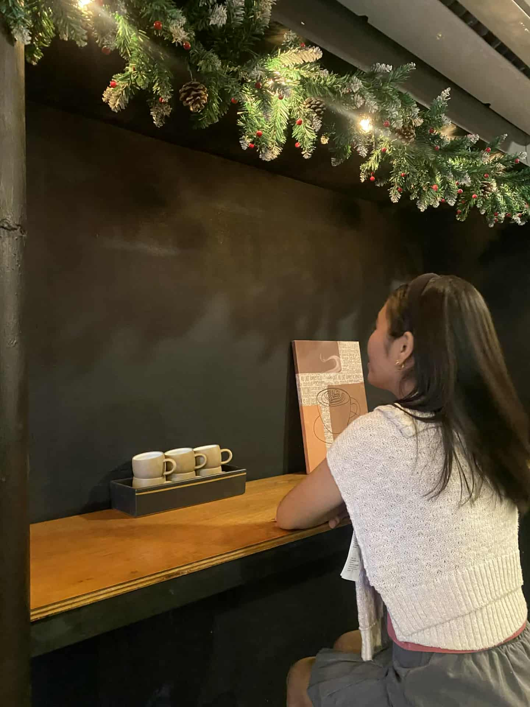

Social media strategy
Content planning, audience and competitor research, and maintaining a consistent social media presence.
Hello, I’m Mae
Social Media Manager
Content Creation · Social Media · Graphic Design
Hi! I'm Mae, a creative and organized individual passionate about social media, fashion, and digital content. I enjoy designing eye-catching graphics, keeping up with online trends, and creating content that helps brands build meaningful connections with their audience.
01 / THE PORTFOLIO
From social brand boards to page management and app interfaces. Explore the details behind each sample.

The person behind the pixels.02 / ABOUT ME
Hi! I’m Mae, a creative and detail-oriented Social Media Manager passionate about helping businesses build a stronger and more engaging presence online. I enjoy creating content that captures attention, connects with audiences, and reflects each brand’s personality.
I can help with content planning, social media strategy, audience and competitor research, content creation, captions, Canva graphics, and maintaining a consistent social media presence. I’m proficient in tools like Canva, Figma, Microsoft Office, and AI productivity tools, and I’m always learning new trends and ways to improve social media content.
I value creativity, organization, attention to detail, and consistency. I enjoy turning ideas into purposeful content and helping brands show up online in a way that feels authentic and engaging.
03 / SKILLS & TOOLS
Creativity, organization, attention to detail, and consistency.
Content planning, audience and competitor research, and maintaining a consistent social media presence.
Content, captions, and Canva graphics that reflect each brand’s personality.
Graphic design and Figma UI design.
04 / EDUCATIONAL BACKGROUND
Talibon Polytechnic College
North Coast Bohol Institute Inc.
05 / CONTACT ME
I'm excited to bring creativity, fresh ideas, and a passion for marketing to your team.